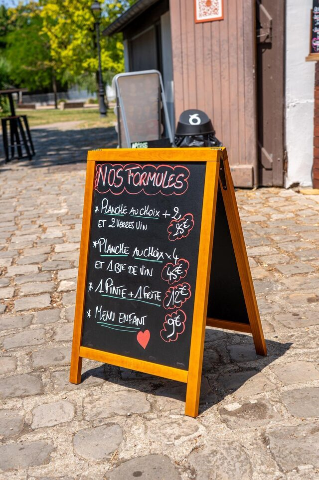

Dans la boucle de Seine, chaque commune a ses bars, mais peu d'endroits où une équipe de dix peut s'asseoir dehors sans réserver une salle. La guinguette de Sartrouville joue ce rôle-là : un point de rendez-vous central, en plein air, ouvert dès 16h.
Un point central, pas une destination
Regardez une carte de la boucle : Sartrouville, Houilles, Montesson, Maisons-Laffitte et Le Mesnil-le-Roi tiennent dans un mouchoir de poche. Le Parc du Dispensaire, en centre-ville de Sartrouville, est à peu près au milieu. C'est ce qui en fait un lieu de retrouvailles pratique quand l'équipe habite un peu partout dans le secteur.
La guinguette y est installée sous les arbres, dans un parc public de 2,75 hectares. On boit son verre dehors, sur une terrasse ombragée, sans salle et sans musique poussée à fond.
Combien de temps depuis chez vous
Depuis Sartrouville
Environ 10 minutes à pied depuis la gare, ou 5 minutes en voiture depuis la plupart des quartiers. Si vous travaillez en centre-ville, vous y êtes avant d'avoir fini de raconter votre journée.
Depuis Houilles
Comptez une dizaine de minutes en voiture. En RER A, la gare de Houilles-Carrières-sur-Seine n'est qu'à une station de Sartrouville : quelques minutes de train, puis dix minutes de marche. C'est l'un des trajets les plus simples de toute la boucle.
Depuis Montesson
Une dizaine de minutes en voiture, selon le quartier de départ et l'heure. Le parking gratuit sur place règle la question de la fin de soirée.
Depuis Maisons-Laffitte
Une dizaine de minutes en voiture, ou quelques minutes de RER A jusqu'à la gare de Sartrouville, puis la marche. Pratique quand une partie de l'équipe préfère laisser la voiture au bureau.
Depuis Le Mesnil-le-Roi
Une dizaine de minutes en voiture également. C'est le genre de trajet qu'on fait sans y penser un jeudi soir.
Ce sont des ordres de grandeur aux heures normales : la traversée de la boucle en fin de journée peut allonger un peu le compteur.

Le bon créneau : 16h – 22h en semaine
Du mardi au vendredi, on ouvre à 16h et on ferme à 22h. Ça laisse largement le temps d'un afterwork qui commence à 18h et qui s'étire jusqu'à 21h sans que personne ne regarde sa montre. Le lundi, c'est fermé. Le week-end, on ouvre dès 11h — mais ce n'est plus vraiment un afterwork.
Et comme tout se passe dehors, l'ouverture dépend de la météo. Avant de lancer l'invitation à toute l'équipe, un coup d'œil à notre Instagram : on y annonce les ouvertures et les annulations.
Venir en équipe : la grande tablée
Vous êtes dix, quinze, vingt ? On peut vous réserver une grande tablée dans le parc. Il ne s'agit pas de fermer le lieu : la guinguette reste ouverte aux autres clients pendant votre soirée, et c'est justement ce qui lui garde son ambiance. Les modalités, les capacités et les délais conseillés sont détaillés sur la page Organiser votre événement à la guinguette.
Pour tout ce qui concerne l'afterwork côté Sartrouville — l'ambiance, les tarifs, les habitudes de la maison — c'est dans Afterwork à Sartrouville : où se retrouver après le travail ?. Cette page-ci se concentre sur la géographie : qui vient d'où, et en combien de temps.
Ce qu'on met sur la table
Des bières pression (blonde à 4 € le demi, IPA à 5 €, et les versions Picon), des vins au verre sélectionnés par Pépites de Vin à partir de 5 €, un prosecco bio, des cocktails à 9 € et de quoi ne pas boire d'alcool sans s'ennuyer.
Côté grignotage, les planches charcuterie et fromage (15 € pour deux, 25 € pour quatre) circulent bien autour d'une grande table, avec les frites maison et les aiguillettes. La formule Grande Tablée — planche 4 personnes plus une bouteille, 45 € — est faite pour ça. Voir le menu complet.
Un afterwork qui ne ressemble pas à un afterwork
Il y a des jeux de plein air à disposition : mölkky, palet breton, pétanque. Certains soirs, il y a un concert ou un blind test — ça marche très bien pour souder une équipe qui ne se parle pas beaucoup d'habitude. Tout est en accès libre : le parc est public, seules les consommations sont payantes.
Questions fréquentes
C'est loin de Houilles ?
Non : une station de RER A, ou une dizaine de minutes en voiture.
Peut-on réserver pour une équipe de vingt ?
Oui, en nous prévenant à l'avance. Passez par le formulaire en précisant la date et le nombre de personnes.
Et s'il pleut ?
La guinguette est en plein air : en cas de mauvais temps, l'ouverture peut être annulée. On l'annonce sur nos réseaux le jour même.
Envie de venir ?
Réservez votre table ou jetez un œil à la carte. On vous attend au Parc du Dispensaire, à Sartrouville.
Réserver une table Voir la carte